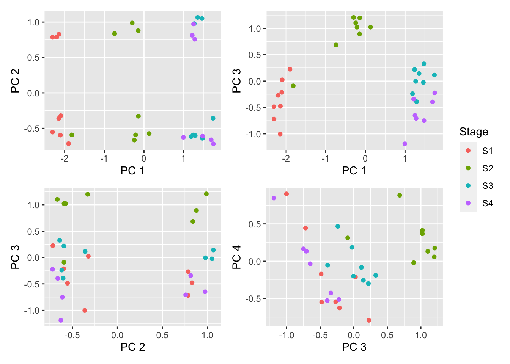
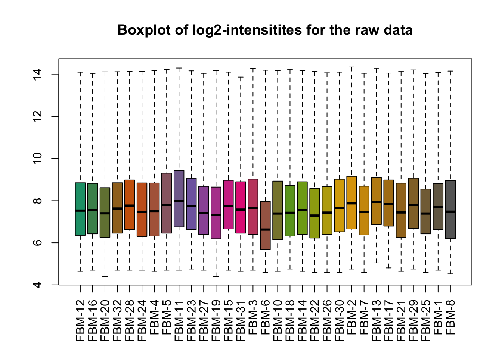
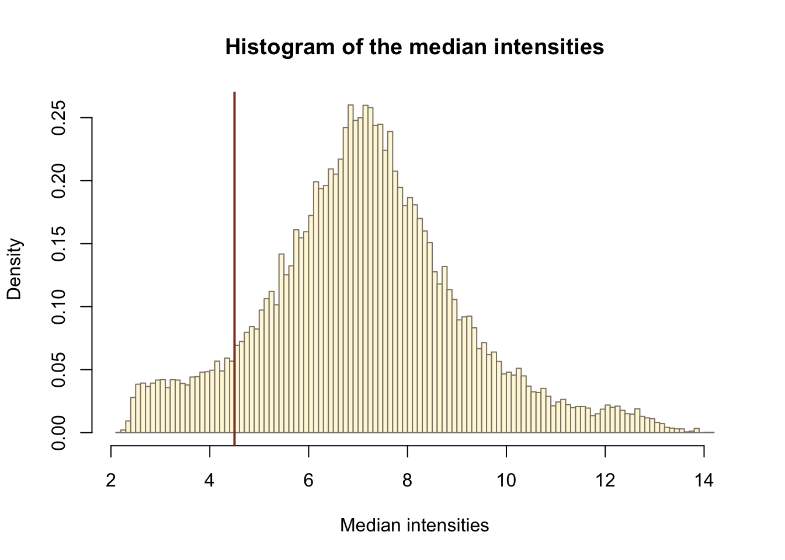
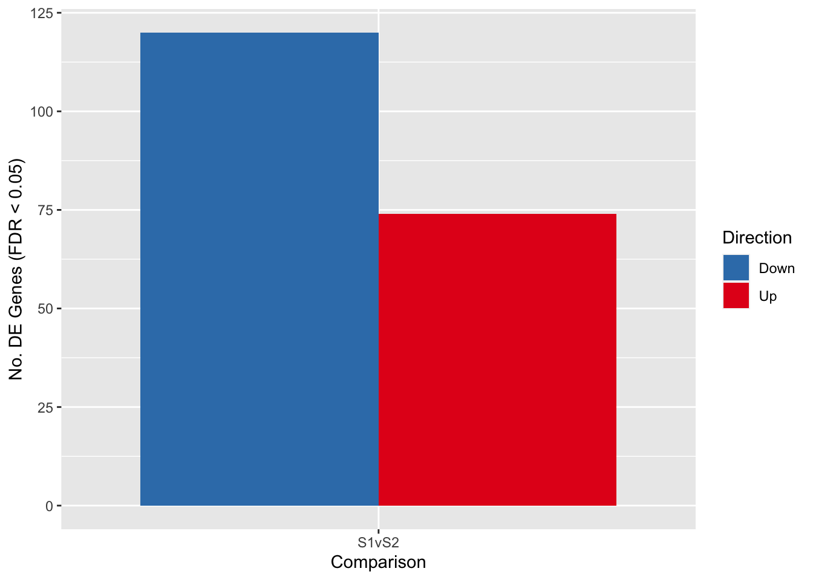

Gene set testing for Illumina HumanMethylation Arrays
Generating "truth" gene sets from Affymetrix array data
Jovana Maksimovic, Alicia Oshlack and Belinda Phipson
April 20, 2021
Last updated: 2021-04-20
Checks: 7 0
Knit directory: methyl-geneset-testing/
This reproducible R Markdown analysis was created with workflowr (version 1.6.2). The Checks tab describes the reproducibility checks that were applied when the results were created. The Past versions tab lists the development history.
Great! Since the R Markdown file has been committed to the Git repository, you know the exact version of the code that produced these results.
Great job! The global environment was empty. Objects defined in the global environment can affect the analysis in your R Markdown file in unknown ways. For reproduciblity it's best to always run the code in an empty environment.
The command set.seed(20200302) was run prior to running the code in the R Markdown file. Setting a seed ensures that any results that rely on randomness, e.g. subsampling or permutations, are reproducible.
Great job! Recording the operating system, R version, and package versions is critical for reproducibility.
Nice! There were no cached chunks for this analysis, so you can be confident that you successfully produced the results during this run.
Great job! Using relative paths to the files within your workflowr project makes it easier to run your code on other machines.
Great! You are using Git for version control. Tracking code development and connecting the code version to the results is critical for reproducibility.
The results in this page were generated with repository version 9d23572. See the Past versions tab to see a history of the changes made to the R Markdown and HTML files.
Note that you need to be careful to ensure that all relevant files for the analysis have been committed to Git prior to generating the results (you can use wflow_publish or wflow_git_commit). workflowr only checks the R Markdown file, but you know if there are other scripts or data files that it depends on. Below is the status of the Git repository when the results were generated:
Ignored files:
Ignored: .DS_Store
Ignored: .Rhistory
Ignored: .Rproj.user/
Ignored: analysis/figures.nb.html
Ignored: code/.DS_Store
Ignored: code/.Rhistory
Ignored: code/.job/
Ignored: code/old/
Ignored: data/.DS_Store
Ignored: data/annotations/
Ignored: data/cache-intermediates/
Ignored: data/cache-region/
Ignored: data/cache-rnaseq/
Ignored: data/cache-runtime/
Ignored: data/datasets/.DS_Store
Ignored: data/datasets/GSE110554-data.RData
Ignored: data/datasets/GSE120854/
Ignored: data/datasets/GSE120854_RAW.tar
Ignored: data/datasets/GSE135446-data.RData
Ignored: data/datasets/GSE135446/
Ignored: data/datasets/GSE135446_RAW.tar
Ignored: data/datasets/GSE45459-data.RData
Ignored: data/datasets/GSE45459_Matrix_signal_intensities.txt
Ignored: data/datasets/GSE45460/
Ignored: data/datasets/GSE45460_RAW.tar
Ignored: data/datasets/GSE95460_RAW.tar
Ignored: data/datasets/GSE95460_RAW/
Ignored: data/datasets/GSE95462-data.RData
Ignored: data/datasets/GSE95462/
Ignored: data/datasets/GSE95462_RAW/
Ignored: data/datasets/SRP100803/
Ignored: data/datasets/SRP125125/.DS_Store
Ignored: data/datasets/SRP125125/SRR6298*/
Ignored: data/datasets/SRP125125/SRR_Acc_List.txt
Ignored: data/datasets/SRP125125/SRR_Acc_List_Full.txt
Ignored: data/datasets/SRP125125/SraRunTable.txt
Ignored: data/datasets/SRP125125/multiqc_data/
Ignored: data/datasets/SRP125125/multiqc_report.html
Ignored: data/datasets/SRP125125/quants/
Ignored: data/datasets/SRP166862/
Ignored: data/datasets/SRP217468/
Ignored: data/datasets/TCGA.BRCA.rds
Ignored: data/datasets/TCGA.KIRC.rds
Ignored: data/misc/
Ignored: output/.DS_Store
Ignored: output/FDR-analysis/
Ignored: output/compare-methods/
Ignored: output/figures/
Ignored: output/methylgsa-params/
Ignored: output/outputs.tar.gz
Ignored: output/random-cpg-sims/
Untracked files:
Untracked: analysis/old/
Note that any generated files, e.g. HTML, png, CSS, etc., are not included in this status report because it is ok for generated content to have uncommitted changes.
These are the previous versions of the repository in which changes were made to the R Markdown (analysis/04_expressionGenesetsBcells.Rmd) and HTML (docs/04_expressionGenesetsBcells.html) files. If you've configured a remote Git repository (see ?wflow_git_remote), click on the hyperlinks in the table below to view the files as they were in that past version.
| File | Version | Author | Date | Message |
|---|---|---|---|---|
| Rmd | 9d23572 | JovMaksimovic | 2021-04-20 | wflow_publish(rownames(stat\(status)[stat\)status$modified == TRUE]) |
| Rmd | 9ee93f1 | JovMaksimovic | 2021-04-19 | Updated code for inline text. |
| html | 4c57176 | JovMaksimovic | 2021-04-13 | Build site. |
| Rmd | 5e34ed3 | JovMaksimovic | 2021-04-12 | Figure updates |
| html | 17cc1c9 | JovMaksimovic | 2021-04-06 | Build site. |
| Rmd | 73c6790 | JovMaksimovic | 2021-04-02 | Analysis of B-cell data |
library(oligo)
library(pd.hugene.1.0.st.v1)
library(hugene10sttranscriptcluster.db)
library(here)
library(tidyverse)
library(limma)
library(glue)
library(patchwork)
library(ChAMP)
source(here("code/utility.R"))Data download, mapping and quantification
The pre B-cell development Affymetrix gene expression array dataset used to generate the "truth" gene sets is avoilable from GEO at GSE45460.
For downstream analysis the CEL files for each sample are expected to be present in the following directory structure:
datadatasetsGSE45460
Data import
Load in data from CEL files and generate sample information from file names.
files <- list.files(here("data/datasets/GSE45460"), pattern = "CEL",
full.names = TRUE)
raw_data <- oligo::read.celfiles(filenames = files)Reading in : /Users/maksimovicjovana/Work/Research/methyl-geneset-testing/data/datasets/GSE45460/GSM1104664_FBM-12_S1.CEL
Reading in : /Users/maksimovicjovana/Work/Research/methyl-geneset-testing/data/datasets/GSE45460/GSM1104665_FBM-16_S1.CEL
Reading in : /Users/maksimovicjovana/Work/Research/methyl-geneset-testing/data/datasets/GSE45460/GSM1104666_FBM-20_S1.CEL
Reading in : /Users/maksimovicjovana/Work/Research/methyl-geneset-testing/data/datasets/GSE45460/GSM1104667_FBM-32_S1.CEL
Reading in : /Users/maksimovicjovana/Work/Research/methyl-geneset-testing/data/datasets/GSE45460/GSM1104668_FBM-28_S1.CEL
Reading in : /Users/maksimovicjovana/Work/Research/methyl-geneset-testing/data/datasets/GSE45460/GSM1104669_FBM-24_S1.CEL
Reading in : /Users/maksimovicjovana/Work/Research/methyl-geneset-testing/data/datasets/GSE45460/GSM1104670_FBM-4_S1.CEL
Reading in : /Users/maksimovicjovana/Work/Research/methyl-geneset-testing/data/datasets/GSE45460/GSM1104671_FBM-5_S1.CEL
Reading in : /Users/maksimovicjovana/Work/Research/methyl-geneset-testing/data/datasets/GSE45460/GSM1104672_FBM-11_S2.CEL
Reading in : /Users/maksimovicjovana/Work/Research/methyl-geneset-testing/data/datasets/GSE45460/GSM1104673_FBM-23_S2.CEL
Reading in : /Users/maksimovicjovana/Work/Research/methyl-geneset-testing/data/datasets/GSE45460/GSM1104674_FBM-27_S2.CEL
Reading in : /Users/maksimovicjovana/Work/Research/methyl-geneset-testing/data/datasets/GSE45460/GSM1104675_FBM-19_S2.CEL
Reading in : /Users/maksimovicjovana/Work/Research/methyl-geneset-testing/data/datasets/GSE45460/GSM1104676_FBM-15_S2.CEL
Reading in : /Users/maksimovicjovana/Work/Research/methyl-geneset-testing/data/datasets/GSE45460/GSM1104677_FBM-31_S2.CEL
Reading in : /Users/maksimovicjovana/Work/Research/methyl-geneset-testing/data/datasets/GSE45460/GSM1104678_FBM-3_S2.CEL
Reading in : /Users/maksimovicjovana/Work/Research/methyl-geneset-testing/data/datasets/GSE45460/GSM1104679_FBM-6_S2.CEL
Reading in : /Users/maksimovicjovana/Work/Research/methyl-geneset-testing/data/datasets/GSE45460/GSM1104680_FBM-10_S3.CEL
Reading in : /Users/maksimovicjovana/Work/Research/methyl-geneset-testing/data/datasets/GSE45460/GSM1104681_FBM-18_S3.CEL
Reading in : /Users/maksimovicjovana/Work/Research/methyl-geneset-testing/data/datasets/GSE45460/GSM1104682_FBM-14_S3.CEL
Reading in : /Users/maksimovicjovana/Work/Research/methyl-geneset-testing/data/datasets/GSE45460/GSM1104683_FBM-22_S3.CEL
Reading in : /Users/maksimovicjovana/Work/Research/methyl-geneset-testing/data/datasets/GSE45460/GSM1104684_FBM-26_S3.CEL
Reading in : /Users/maksimovicjovana/Work/Research/methyl-geneset-testing/data/datasets/GSE45460/GSM1104685_FBM-30_S3.CEL
Reading in : /Users/maksimovicjovana/Work/Research/methyl-geneset-testing/data/datasets/GSE45460/GSM1104686_FBM-2_S3.CEL
Reading in : /Users/maksimovicjovana/Work/Research/methyl-geneset-testing/data/datasets/GSE45460/GSM1104687_FBM-7_S3.CEL
Reading in : /Users/maksimovicjovana/Work/Research/methyl-geneset-testing/data/datasets/GSE45460/GSM1104688_FBM-13_S4.CEL
Reading in : /Users/maksimovicjovana/Work/Research/methyl-geneset-testing/data/datasets/GSE45460/GSM1104689_FBM-17_S4.CEL
Reading in : /Users/maksimovicjovana/Work/Research/methyl-geneset-testing/data/datasets/GSE45460/GSM1104690_FBM-21_S4.CEL
Reading in : /Users/maksimovicjovana/Work/Research/methyl-geneset-testing/data/datasets/GSE45460/GSM1104691_FBM-29_S4.CEL
Reading in : /Users/maksimovicjovana/Work/Research/methyl-geneset-testing/data/datasets/GSE45460/GSM1104692_FBM-25_S4.CEL
Reading in : /Users/maksimovicjovana/Work/Research/methyl-geneset-testing/data/datasets/GSE45460/GSM1104693_FBM-1_S4.CEL
Reading in : /Users/maksimovicjovana/Work/Research/methyl-geneset-testing/data/datasets/GSE45460/GSM1104694_FBM-8_S4.CELtargets <- as.data.frame(strsplit2(rownames(raw_data@phenoData),"_")[,2:3])
colnames(targets) <- c("ID","Stage")
targets$Stage <- gsub(".CEL","",targets$Stage, fixed = TRUE)
rownames(targets) <- rownames(raw_data@phenoData)
Biobase::pData(raw_data) <- targets
targets ID Stage
GSM1104664_FBM-12_S1.CEL FBM-12 S1
GSM1104665_FBM-16_S1.CEL FBM-16 S1
GSM1104666_FBM-20_S1.CEL FBM-20 S1
GSM1104667_FBM-32_S1.CEL FBM-32 S1
GSM1104668_FBM-28_S1.CEL FBM-28 S1
GSM1104669_FBM-24_S1.CEL FBM-24 S1
GSM1104670_FBM-4_S1.CEL FBM-4 S1
GSM1104671_FBM-5_S1.CEL FBM-5 S1
GSM1104672_FBM-11_S2.CEL FBM-11 S2
GSM1104673_FBM-23_S2.CEL FBM-23 S2
GSM1104674_FBM-27_S2.CEL FBM-27 S2
GSM1104675_FBM-19_S2.CEL FBM-19 S2
GSM1104676_FBM-15_S2.CEL FBM-15 S2
GSM1104677_FBM-31_S2.CEL FBM-31 S2
GSM1104678_FBM-3_S2.CEL FBM-3 S2
GSM1104679_FBM-6_S2.CEL FBM-6 S2
GSM1104680_FBM-10_S3.CEL FBM-10 S3
GSM1104681_FBM-18_S3.CEL FBM-18 S3
GSM1104682_FBM-14_S3.CEL FBM-14 S3
GSM1104683_FBM-22_S3.CEL FBM-22 S3
GSM1104684_FBM-26_S3.CEL FBM-26 S3
GSM1104685_FBM-30_S3.CEL FBM-30 S3
GSM1104686_FBM-2_S3.CEL FBM-2 S3
GSM1104687_FBM-7_S3.CEL FBM-7 S3
GSM1104688_FBM-13_S4.CEL FBM-13 S4
GSM1104689_FBM-17_S4.CEL FBM-17 S4
GSM1104690_FBM-21_S4.CEL FBM-21 S4
GSM1104691_FBM-29_S4.CEL FBM-29 S4
GSM1104692_FBM-25_S4.CEL FBM-25 S4
GSM1104693_FBM-1_S4.CEL FBM-1 S4
GSM1104694_FBM-8_S4.CEL FBM-8 S4Quality control
Multi-dimensional scaling (MDS) plots show the largest sources of variation in the data. They are a good way of exploring the relationships between the samples and identifying structure in the data. The following series of MDS plots examines the first four principal components.
dims <- list(c(1,2), c(1,3), c(2,3), c(3,4))
p <- vector("list", length(dims))
for(i in 1:length(dims)){
tmp <- plotMDS(exp_raw <- log2(Biobase::exprs(raw_data)), top=1000,
gene.selection="common", plot = FALSE,
dim.plot = dims[[i]])
dat <- data.frame(x = tmp$x, y = tmp$y, group = targets$Stage)
p[[i]] <- ggplot(dat, aes(x = x, y = y, colour = group)) +
geom_point() +
labs(colour = "Stage", x = glue("PC {tmp$dim.plot[1]}"),
y = glue("PC {tmp$dim.plot[2]}"))
}
(p[[1]] | p[[2]]) / (p[[3]] | p[[4]]) + plot_layout(guides = "collect")
| Version | Author | Date |
|---|---|---|
| 17cc1c9 | JovMaksimovic | 2021-04-06 |
Examine the raw intensity distribution of the samples.
log2(exprs(raw_data)) %>%
as_tibble %>%
rename_with(.fn = ~ targets$ID) %>%
pivot_longer(everything(), names_to = "ID",
values_to = "intensity") -> dat
dat$Stage <- rep(targets$Stage, nrow(raw_data))
p <- ggplot(dat, aes(x = ID, y = intensity, fill = Stage)) +
geom_boxplot(outlier.shape = NA) +
theme(axis.text.x = element_text(angle = 60, size = 6.5, hjust = 1)) +
labs(x = "Sample", y = "Log2 Intensity")
p
Save figure for use in manuscript.
fig <- here("output/figures/SFig-4E.rds")
saveRDS(p, fig, compress = FALSE)Generate Relative Log Expression (RLE) plots of the data.
raw_eset <- oligo::rma(raw_data, target = "core", normalize = FALSE)Background correcting
Calculating Expressionrow_medians_assayData <-
Biobase::rowMedians(as.matrix(Biobase::exprs(raw_eset)))
RLE_data <- sweep(Biobase::exprs(raw_eset), 1, row_medians_assayData)
RLE_data <- as.data.frame(RLE_data)
RLE_data_gathered <- tidyr::gather(RLE_data, Sample, log2_expression_deviation)
ggplot2::ggplot(RLE_data_gathered, aes(Sample, log2_expression_deviation)) +
geom_boxplot(outlier.shape = NA) +
ylim(c(-2, 2)) +
theme(axis.text.x = element_text(colour = "aquamarine4",
angle = 60, size = 6.5, hjust = 1 ,
face = "bold")) +
scale_x_discrete(labels=targets$ID)Warning: Removed 11258 rows containing non-finite values (stat_boxplot).
Apply the full RMA algorithm to our data in order to background-correct, normalize and summarize the data.
eset <- oligo::rma(raw_data, target = "core")Background correcting
Normalizing
Calculating Expressiondims <- list(c(1,2), c(1,3), c(2,3), c(3,4))
p <- vector("list", length(dims))
for(i in 1:length(dims)){
tmp <- plotMDS(exp_raw <- log2(Biobase::exprs(eset)), top=1000,
gene.selection="common", plot = FALSE,
dim.plot = dims[[i]])
dat <- data.frame(x = tmp$x, y = tmp$y, group = targets$Stage)
p[[i]] <- ggplot(dat, aes(x = x, y = y, colour = group)) +
geom_point() +
labs(colour = "Stage", x = glue("PC {tmp$dim.plot[1]}"),
y = glue("PC {tmp$dim.plot[2]}"))
}
(p[[1]] | p[[2]]) / (p[[3]] | p[[4]]) + plot_layout(guides = "collect")
Save figure for use in manuscript.
fig <- here("output/figures/SFig-4F.rds")
saveRDS(p[[1]], fig, compress = FALSE)no_of_samples <- table(targets$Stage)Filter out all transcripts that do not have intensities greater than the threshold in at least as many arrays as the smallest experimental group which we define as 7.
medians <- rowMedians(Biobase::exprs(eset))
hist_res <- hist(medians, 100, col = "cornsilk1", freq = FALSE,
main = "Histogram of the median intensities",
border = "antiquewhite4",
xlab = "Median intensities")
| Version | Author | Date |
|---|---|---|
| 4c57176 | JovMaksimovic | 2021-04-13 |
man_threshold <- 4.5
hist_res <- hist(medians, 100, col = "cornsilk", freq = FALSE,
main = "Histogram of the median intensities",
border = "antiquewhite4",
xlab = "Median intensities")
abline(v = man_threshold, col = "coral4", lwd = 2)
idx_man_threshold <- apply(Biobase::exprs(eset), 1, function(x){
sum(x > man_threshold) >= min(no_of_samples)})
table(idx_man_threshold)idx_man_threshold
FALSE TRUE
2502 30795 eset_filt <- subset(eset, idx_man_threshold)Many transcript-cluster identifiers will map to multiple Entrez IDs, i.e. they can’t be unambigously assigned. Filter them out.
anno <- AnnotationDbi::select(hugene10sttranscriptcluster.db,
keys = (featureNames(eset_filt)),
columns = c("SYMBOL", "GENENAME", "ENTREZID"),
keytype = "PROBEID")'select()' returned 1:many mapping between keys and columnsanno <- subset(anno, !is.na(SYMBOL))anno_grouped <- group_by(anno, PROBEID)
anno_summarized <-
dplyr::summarize(anno_grouped, no_of_matches = n_distinct(ENTREZID))
head(anno_summarized)# A tibble: 6 x 2
PROBEID no_of_matches
<chr> <int>
1 7896740 3
2 7896742 3
3 7896744 4
4 7896754 1
5 7896756 2
6 7896759 1anno_filtered <- filter(anno_summarized, no_of_matches > 1)
head(anno_filtered)# A tibble: 6 x 2
PROBEID no_of_matches
<chr> <int>
1 7896740 3
2 7896742 3
3 7896744 4
4 7896756 2
5 7896937 3
6 7896961 3nrow(anno_filtered)[1] 2115ids_to_exlude <- (featureNames(eset_filt) %in% anno_filtered$PROBEID)
table(ids_to_exlude)ids_to_exlude
FALSE TRUE
28680 2115 eset_final <- subset(eset_filt, !ids_to_exlude)
validObject(eset_final)[1] TRUEfData(eset_final)$PROBEID <- rownames(fData(eset_final))
fData(eset_final) <- dplyr::left_join(fData(eset_final), anno)Joining, by = "PROBEID"rownames(fData(eset_final)) <- fData(eset_final)$PROBEID
validObject(eset_final)[1] TRUEFilter out probes that don't have ENTREZIDs.
keep <- !is.na(fData(eset_final)$ENTREZID)
eset_final <- eset_final[keep,]
validObject(eset_final)[1] TRUENumber of genes remaining for downstream analysis.
dim(eset_final)Features Samples
19494 31 Differential expression analysis
Using the RMA processed data, fit probe-wise linear models with limma to identify gene expression differences between Stage 1 and Stage 2 of pre B-cell development.
Stage <- factor(targets$Stage)
design <- model.matrix(~0+Stage)
fit <- lmFit(eset_final, design)
cont.matrix <- makeContrasts(S1vS2=StageS1-StageS2,
levels=design)
fit2 <- contrasts.fit(fit, cont.matrix)
fit2 <- eBayes(fit2, robust=TRUE, trend=TRUE)
tfit <- treat(fit2, lfc = 0.5)
pval <- 0.05
fitSum <- summary(decideTests(tfit, p.value = pval))
fitSum S1vS2
Down 120
NotSig 19300
Up 74Visualise the number of differentially expressed genes.
fitSum %>%
data.frame %>%
rename_with(.fn = ~ c("Direction", "Comparison", "Value")) %>%
filter(Direction != "NotSig") -> dat
p <- ggplot(dat, aes(x = Comparison, y = Value, fill = Direction)) +
geom_bar(stat = "identity", position = "dodge") +
labs(x = "Comparison", y = glue("No. DE Genes (FDR < {pval})"),
fill = "Direction") +
scale_fill_brewer(palette = "Set1", direction = -1)
p
Save figure for use in manuscript.
fig <- here("output/figures/SFig-4G.rds")
saveRDS(p, fig, compress = FALSE)Gene set testing
Testing for enrichment of GO categories and KEGG pathways amongst statistically significant differentially expressed genes.
Save results as RDS objects for use as "truth" sets in methylation analyses.
go <- NULL
kegg <- NULL
for(i in 1:ncol(cont.matrix)){
#top <- topTable(fit2, coef = i, p.value = pval, number = Inf)
top <- topTreat(tfit, coef = i, p.value = pval, number = Inf)
tmp <- goana(top$ENTREZID, universe = fData(eset_final)$ENTREZID)
tmp <- topGO(tmp, number = Inf)
tmp$FDR <- p.adjust(tmp$P.DE, method = "BH")
tmp <- rownames_to_column(tmp, var = "ID")
tmp$contrast <- colnames(cont.matrix)[i]
go <- bind_rows(go, tmp)
tmp <- kegga(top$ENTREZID, universe = fData(eset_final)$ENTREZID,
species = "Hs", species.KEGG = "hsa")
tmp <- topKEGG(tmp, number = Inf)
tmp$FDR <- p.adjust(tmp$P.DE, method = "BH")
tmp <- rownames_to_column(tmp, var = "PID")
tmp$contrast <- colnames(cont.matrix)[i]
kegg <- bind_rows(kegg, tmp)
}
outDir <- here::here("data/cache-rnaseq")
if (!dir.exists(outDir)) dir.create(outDir)
saveRDS(go, here(glue("data/cache-rnaseq/RNAseq-GSE45460-GO.rds")))
saveRDS(kegg, here(glue("data/cache-rnaseq/RNAseq-GSE45460-KEGG.rds")))Test whether the BROAD sets are enriched for the differentially expressed genes using the gsaseq function that can be found in code/utility.R
data(PathwayList)
keep <- sapply(PathwayList, function(x) any(x %in% fData(eset_final)$SYMBOL))
entrez <- suppressMessages(lapply(PathwayList[keep], function(x){
tmp <- unname(fData(eset_final)$ENTREZID[fData(eset_final)$SYMBOL %in% x])
tmp[!is.na(tmp)]
}))
gsa <- NULL
for(i in 1:ncol(cont.matrix)){
#top <- topTable(fit2, coef = i, p.value = 0.05, number = Inf)
top <- topTreat(tfit, coef = i, p.value = pval, number = Inf)
tmp <- gsaseq(top$ENTREZID, universe = fData(eset_final)$ENTREZID,
collection = entrez, gene.length = NULL)
tmp <- rownames_to_column(data.frame(tmp), var = "ID")
tmp$contrast <- colnames(cont.matrix)[i]
gsa <- bind_rows(gsa, tmp)
}
saveRDS(gsa, here("data/cache-rnaseq/RNAseq-GSE45460-BROAD-GSA.rds"))
sessionInfo()R version 4.0.3 (2020-10-10)
Platform: x86_64-apple-darwin17.0 (64-bit)
Running under: macOS Mojave 10.14.6
Matrix products: default
BLAS: /Library/Frameworks/R.framework/Versions/4.0/Resources/lib/libRblas.dylib
LAPACK: /Library/Frameworks/R.framework/Versions/4.0/Resources/lib/libRlapack.dylib
locale:
[1] en_AU.UTF-8/en_AU.UTF-8/en_AU.UTF-8/C/en_AU.UTF-8/en_AU.UTF-8
attached base packages:
[1] stats4 parallel stats graphics grDevices utils datasets
[8] methods base
other attached packages:
[1] ChAMP_2.20.1
[2] RPMM_1.25
[3] cluster_2.1.1
[4] DT_0.17
[5] IlluminaHumanMethylationEPICmanifest_0.3.0
[6] Illumina450ProbeVariants.db_1.26.0
[7] DMRcate_2.4.1
[8] ChAMPdata_2.22.0
[9] minfi_1.36.0
[10] bumphunter_1.32.0
[11] locfit_1.5-9.4
[12] iterators_1.0.13
[13] foreach_1.5.1
[14] SummarizedExperiment_1.20.0
[15] MatrixGenerics_1.2.1
[16] matrixStats_0.58.0
[17] GenomicRanges_1.42.0
[18] GenomeInfoDb_1.26.7
[19] patchwork_1.1.1
[20] glue_1.4.2
[21] limma_3.46.0
[22] forcats_0.5.1
[23] stringr_1.4.0
[24] dplyr_1.0.5
[25] purrr_0.3.4
[26] readr_1.4.0
[27] tidyr_1.1.3
[28] tibble_3.1.0
[29] ggplot2_3.3.3
[30] tidyverse_1.3.0
[31] here_1.0.1
[32] hugene10sttranscriptcluster.db_8.7.0
[33] org.Hs.eg.db_3.12.0
[34] AnnotationDbi_1.52.0
[35] pd.hugene.1.0.st.v1_3.14.1
[36] DBI_1.1.1
[37] RSQLite_2.2.5
[38] oligo_1.54.1
[39] Biostrings_2.58.0
[40] XVector_0.30.0
[41] IRanges_2.24.1
[42] S4Vectors_0.28.1
[43] Biobase_2.50.0
[44] oligoClasses_1.52.0
[45] BiocGenerics_0.36.0
[46] workflowr_1.6.2
loaded via a namespace (and not attached):
[1] rappdirs_0.3.3
[2] rtracklayer_1.50.0
[3] R.methodsS3_1.8.1
[4] wateRmelon_1.34.0
[5] bit64_4.0.5
[6] knitr_1.31
[7] DelayedArray_0.16.3
[8] R.utils_2.10.1
[9] data.table_1.14.0
[10] rpart_4.1-15
[11] doParallel_1.0.16
[12] RCurl_1.98-1.3
[13] GEOquery_2.58.0
[14] AnnotationFilter_1.14.0
[15] generics_0.1.0
[16] GenomicFeatures_1.42.3
[17] preprocessCore_1.52.1
[18] combinat_0.0-8
[19] bit_4.0.4
[20] xml2_1.3.2
[21] lubridate_1.7.10
[22] httpuv_1.5.5
[23] assertthat_0.2.1
[24] IlluminaHumanMethylation450kmanifest_0.4.0
[25] viridis_0.5.1
[26] isva_1.9
[27] IlluminaHumanMethylationEPICanno.ilm10b4.hg19_0.6.0
[28] xfun_0.22
[29] hms_1.0.0
[30] jquerylib_0.1.3
[31] DNAcopy_1.64.0
[32] evaluate_0.14
[33] missMethyl_1.24.0
[34] promises_1.2.0.1
[35] fansi_0.4.2
[36] scrime_1.3.5
[37] progress_1.2.2
[38] dendextend_1.14.0
[39] dbplyr_2.1.1
[40] readxl_1.3.1
[41] htmlwidgets_1.5.3
[42] reshape_0.8.8
[43] ROC_1.66.0
[44] ellipsis_0.3.1
[45] backports_1.2.1
[46] permute_0.9-5
[47] annotate_1.68.0
[48] biomaRt_2.46.3
[49] sparseMatrixStats_1.2.1
[50] vctrs_0.3.7
[51] ensembldb_2.14.0
[52] cachem_1.0.4
[53] withr_2.4.1
[54] globaltest_5.44.0
[55] Gviz_1.34.1
[56] BSgenome_1.58.0
[57] checkmate_2.0.0
[58] GenomicAlignments_1.26.0
[59] prettyunits_1.1.1
[60] mclust_5.4.7
[61] ExperimentHub_1.16.0
[62] lazyeval_0.2.2
[63] crayon_1.4.1
[64] genefilter_1.72.1
[65] labeling_0.4.2
[66] edgeR_3.32.1
[67] pkgconfig_2.0.3
[68] nlme_3.1-152
[69] ProtGenerics_1.22.0
[70] nnet_7.3-15
[71] rlang_0.4.10
[72] nleqslv_3.3.2
[73] lifecycle_1.0.0
[74] affyio_1.60.0
[75] BiocFileCache_1.14.0
[76] modelr_0.1.8
[77] AnnotationHub_2.22.0
[78] dichromat_2.0-0
[79] cellranger_1.1.0
[80] rprojroot_2.0.2
[81] rngtools_1.5
[82] IlluminaHumanMethylation450kanno.ilmn12.hg19_0.6.0
[83] base64_2.0
[84] Matrix_1.3-2
[85] Rhdf5lib_1.12.1
[86] reprex_2.0.0
[87] base64enc_0.1-3
[88] geneLenDataBase_1.26.0
[89] whisker_0.4
[90] viridisLite_0.3.0
[91] png_0.1-7
[92] bitops_1.0-6
[93] R.oo_1.24.0
[94] KernSmooth_2.23-18
[95] rhdf5filters_1.2.0
[96] blob_1.2.1
[97] DelayedMatrixStats_1.12.3
[98] doRNG_1.8.2
[99] qvalue_2.22.0
[100] nor1mix_1.3-0
[101] jpeg_0.1-8.1
[102] scales_1.1.1
[103] memoise_2.0.0
[104] magrittr_2.0.1
[105] plyr_1.8.6
[106] zlibbioc_1.36.0
[107] compiler_4.0.3
[108] RColorBrewer_1.1-2
[109] illuminaio_0.32.0
[110] clue_0.3-58
[111] JADE_2.0-3
[112] affy_1.68.0
[113] Rsamtools_2.6.0
[114] cli_2.4.0
[115] DSS_2.38.0
[116] htmlTable_2.1.0
[117] Formula_1.2-4
[118] mgcv_1.8-34
[119] MASS_7.3-53.1
[120] tidyselect_1.1.0
[121] stringi_1.5.3
[122] highr_0.8
[123] yaml_2.2.1
[124] askpass_1.1
[125] latticeExtra_0.6-29
[126] grid_4.0.3
[127] sass_0.3.1
[128] VariantAnnotation_1.36.0
[129] tools_4.0.3
[130] rstudioapi_0.13
[131] foreign_0.8-81
[132] git2r_0.28.0
[133] bsseq_1.26.0
[134] gridExtra_2.3
[135] farver_2.1.0
[136] digest_0.6.27
[137] BiocManager_1.30.12
[138] shiny_1.6.0
[139] ff_4.0.4
[140] quadprog_1.5-8
[141] Rcpp_1.0.6
[142] siggenes_1.64.0
[143] broom_0.7.6
[144] BiocVersion_3.12.0
[145] later_1.1.0.1
[146] httr_1.4.2
[147] biovizBase_1.38.0
[148] lumi_2.42.0
[149] colorspace_2.0-0
[150] rvest_1.0.0
[151] XML_3.99-0.6
[152] fs_1.5.0
[153] splines_4.0.3
[154] statmod_1.4.35
[155] kpmt_0.1.0
[156] multtest_2.46.0
[157] shinythemes_1.2.0
[158] plotly_4.9.3
[159] xtable_1.8-4
[160] jsonlite_1.7.2
[161] marray_1.68.0
[162] R6_2.5.0
[163] Hmisc_4.5-0
[164] pillar_1.5.1
[165] htmltools_0.5.1.1
[166] mime_0.10
[167] affxparser_1.62.0
[168] fastmap_1.1.0
[169] BiocParallel_1.24.1
[170] interactiveDisplayBase_1.28.0
[171] beanplot_1.2
[172] codetools_0.2-18
[173] utf8_1.2.1
[174] sva_3.38.0
[175] lattice_0.20-41
[176] bslib_0.2.4
[177] BiasedUrn_1.07
[178] curl_4.3
[179] gtools_3.8.2
[180] GO.db_3.12.1
[181] openssl_1.4.3
[182] survival_3.2-10
[183] methylumi_2.36.0
[184] rmarkdown_2.7
[185] fastICA_1.2-2
[186] munsell_0.5.0
[187] rhdf5_2.34.0
[188] GenomeInfoDbData_1.2.4
[189] goseq_1.42.0
[190] impute_1.64.0
[191] HDF5Array_1.18.1
[192] reshape2_1.4.4
[193] haven_2.3.1
[194] gtable_0.3.0